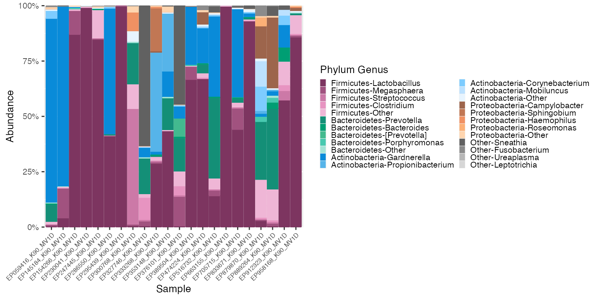
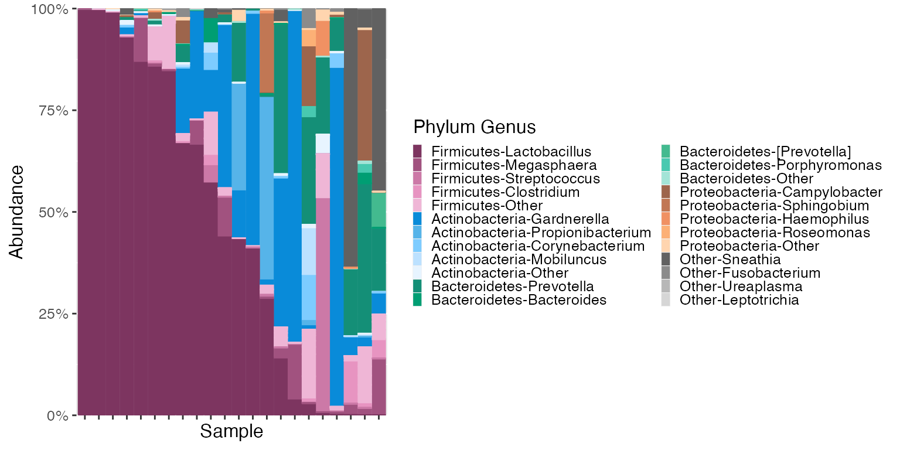

vignettes/microshades-HMP2.Rmd
microshades-HMP2.RmdThis vignette uses 16s rRNA sequencing data from the Human Microbiome Project 2. Vaginal microbiome samples from moms will be examined in this tutorial at the Phylum & Genus taxonomic levels.
This data is available in the HMP2Data library. To download use BiocManager::install("HMP2Data").
Learn more about the HMP2 Data here
# Load the momspi16S data
ps_momspi16S <- momspi16S()
ps_momspi16S## phyloseq-class experiment-level object
## otu_table() OTU Table: [ 7665 taxa and 9107 samples ]
## sample_data() Sample Data: [ 9107 samples by 13 sample variables ]
## tax_table() Taxonomy Table: [ 7665 taxa by 7 taxonomic ranks ]The ps_momspi16S object contains 9,107 samples. To focus on a smaller sample size, use phyloseq function subset_samples()
# Subset the samples
ps_momspi16S_sub <- subset_samples(ps_momspi16S,sample_body_site == "vagina")
ps_momspi16S_sub <- subset_samples(ps_momspi16S_sub, visit_number == 9)
ps_momspi16S_sub## phyloseq-class experiment-level object
## otu_table() OTU Table: [ 7665 taxa and 22 samples ]
## sample_data() Sample Data: [ 22 samples by 13 sample variables ]
## tax_table() Taxonomy Table: [ 7665 taxa by 7 taxonomic ranks ]Now that the sample size is reduced (22 samples), begin using microshades functions to evaluate abundance and apply advanced color organization.
# Use microshades function prep_mdf to agglomerate, normalize, and melt the phyloseq object
mdf_prep <- prep_mdf(ps_momspi16S_sub)
# Create a color object for the specified data
color_objs_momspi16S <- create_color_dfs(mdf_prep, cvd = TRUE)
# Extract
mdf_momspi16S_unordered <- color_objs_momspi16S$mdf
cdf_momspi16S <- color_objs_momspi16S$cdfThe dataframe mdf_momspi16S_unordered contains sample data and abundance info. The dataframe cdf_momspi16S stores the color mapping information used for plotting.
plot_microshades produces a stacked barplot with ordered subgroup taxonomy. The darkest shade is the most abundant, and the lightest shade is the least abundant. (excluding the “other” subgroup from each of the selected groups)
plot_1 <- plot_microshades(mdf_momspi16S_unordered, cdf_momspi16S)
plot_1 + scale_y_continuous(labels = scales::percent, expand = expansion(0)) +
theme(legend.key.size = unit(0.2, "cm"), text=element_text(size=10)) +
theme(axis.text.x = element_text(size= 6)) 
The plot above indicates that Lactobacillus is the most abundant genera in the Firmicutes phyla in this dataset. To see samples arranged in order of Lactobacillus abundance (or any genus listed in the legend above) use the reorder_samples_by() function and then plot.
# reorder_samples_by will change the order of samples based on an abundance of a specified subgroup taxonomy
# The default subgroup_level is "Genus" and the specified subgroup taxonomy to order by is "Lactobacillus"
momspi16S_ordered <- reorder_samples_by(mdf_momspi16S_unordered,cdf_momspi16S, order = "Lactobacillus")
mdf_momspi16S_ordered <- momspi16S_ordered$mdf
cdf_momspi16S_ordered <- momspi16S_ordered$cdf
plot_2 <- plot_microshades(mdf_momspi16S_ordered, cdf_momspi16S_ordered)
plot_2 + scale_y_continuous(labels = scales::percent, expand = expansion(0)) +
theme(legend.key.size = unit(0.2, "cm"), text=element_text(size=12)) +
theme(axis.text.x = element_blank())